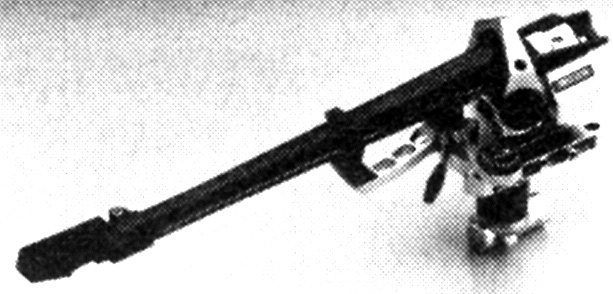

310

■価格 178,000円
■型式 スタティックバランス型
■全長 312�o
■実行長 238.5�o
■オーバー・ハング 16.5�o
■トラッキングエラー
■針圧範囲 0〜3g
■アーム高さ調整 56.4〜87.9�o（最大高）
■アームベース穴
■アンチスケートディバイス あり
■アームリフター あり
■ラテラルバランサー
■カートリッジ自重 6〜17g
■線間容量
■発売 1989年
■販売終了 年頃
■備考 価格は1989年頃のもの
1993年には210,000円
1994年には170,000円
テーパード・パイプアーム。
垂直ベアリングに密閉型ベアリングを採用。
アームベースは2分割式、プレイヤーベース取付部と
ピラー締め付け部に別れ、結合部分にラックギアを
切り込み、オーバハング調整が可能。
2芯シールド型コード、360度回転可能なコネクター採用。
ヘッドシェル着脱可。出力ケーブル1.2m。
専用シェル 3951/310
11,000円
SMEのインデックスへ